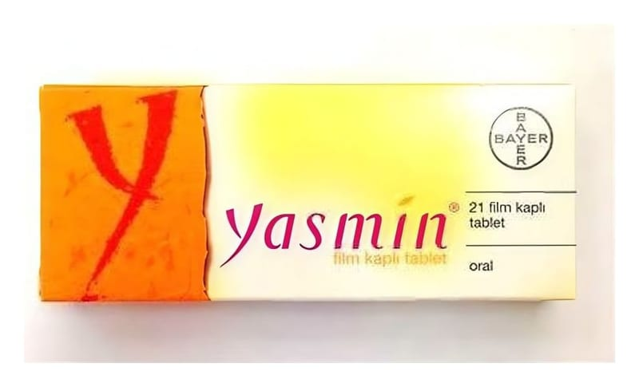

Yasmin 3 mg/30 mcg Film Kaplı Tablet, 21 Adet

Ne için kullanılır
KT · Bölüm 1• YASMIN, 21 tabletlik ve 3x21 tabletlik ambalajlarda bulunur. Her bir film kaplı tablet 3 mg drospirenon ve 0,03 mg etinilestradiol içerir. Bu tabletler; bir tarafında düzgün altıgen içerisinde “DO” işaretli yuvarlak, bikonveks, açık sarı film kaplı tablet şeklindedir. YASMIN, laktoz monohidrat (sığır) içerir.
• Östrojen ve progesteron hormonlarını içeren ve ağız yoluyla alınan doğum kontrol haplarına “Kombine Oral Kontraseptif (KOK)” denir. YASMIN bu grupta yer alan bir ilaçtır.
• YASMIN, gebeliği önlemek amacıyla kullanılır. Bunun dışında hormonlara bağlı vücutta su tutulması, sivilce ve ciltte yağlanmadan şikayetçi kadınlarda kullanılır.